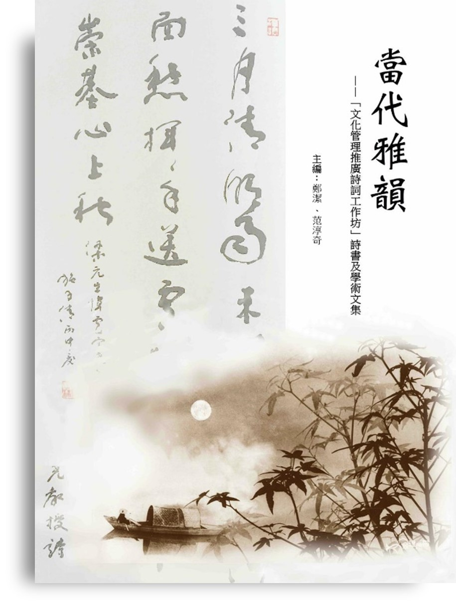

|

|
Zheng, J. and Fan C.Q., eds., 2016,
Dangdai Yayun: ‘Wenhua Guanyi Tuiguang
Shici Gongzuofang’ Shishu Wenji
[Contemporary Elegant Rhythms:
‘The Cultural Management Approach
to Promoting Classical Chinese Poetry
Workshop’ Anthology], (Hong Kong:
Calligraphy and Art Press).
|